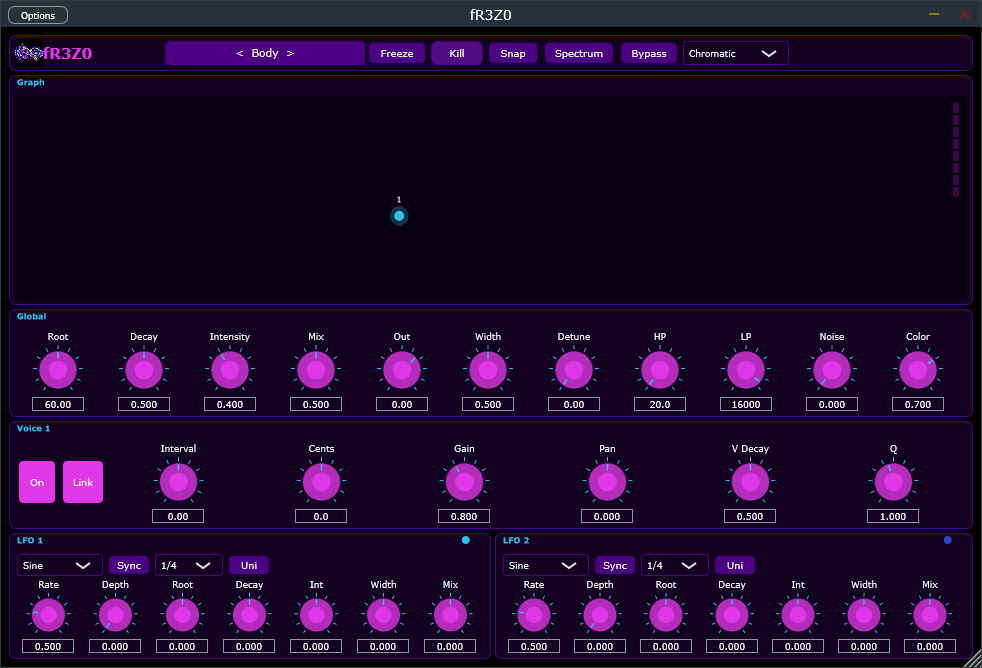
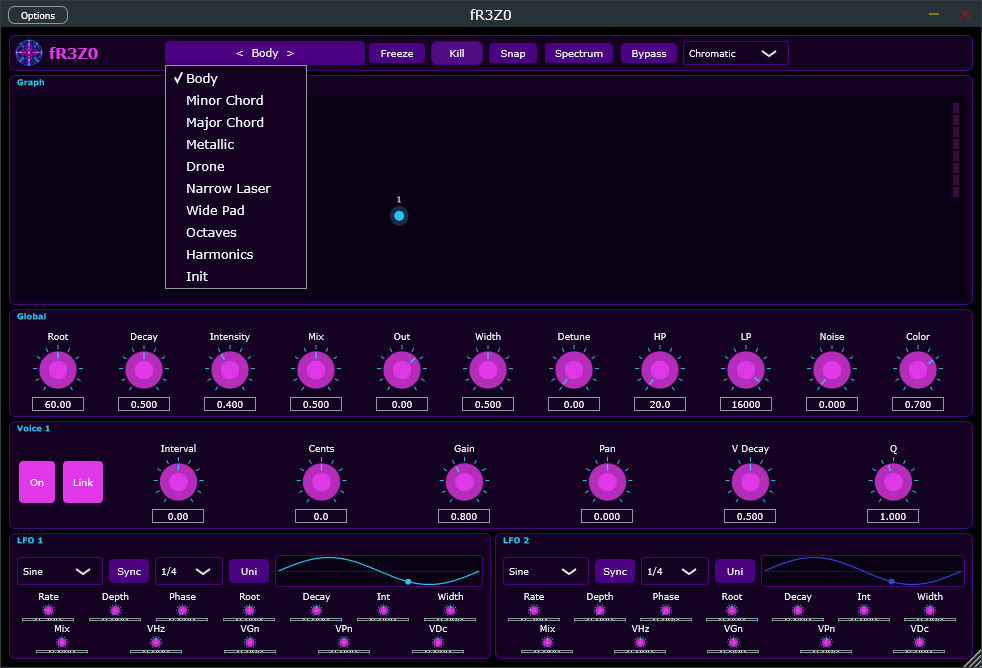

fR3Z0
A resonator you can actually tweak.
Eight bandpass voices, global decay and intensity, mix, width, noise, freeze, kill, two LFOs, and a graph that writes the same parameters as the knobs. MIDI notes set the root. Not a one-knob plugin.
It is part of Stupid Audio, the family of free plugins.
The Graph
Click empty space to add a voice. Drag a peak to set frequency and gain. Scroll to change Q. Right-click to disable. The knobs below stay in sync — the graph is a fast editor, not a hidden macro.

Presets
Factory programs cover body, chords, metallic, drones, a narrow laser, a wide pad, octaves, and harmonics. Step them from the bar or pick from the list.
